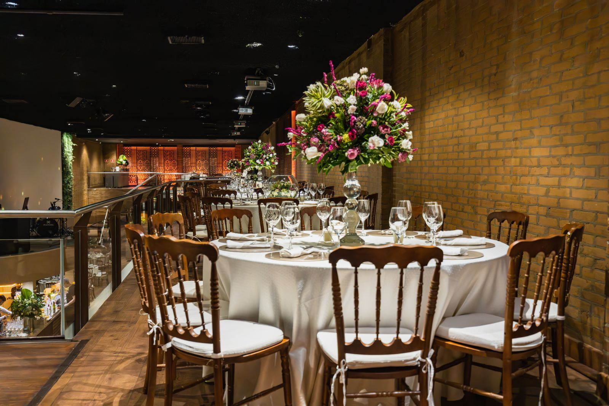

COMPREHENSIVE
Full-Service Planning & Production
Complete architectural planning from day one to the last dance. We manage budget modeling, venue vetting, contract reviews, 12+ planning sessions, design concepting, vendor team management, court choreography, and 14-hour on-site event production.
- Dedicated lead planner & on-site operations team
- Line-item budget forecasting & payment milestones
- Complete vendor team curation & contract negotiations
- Court of Honor choreography & master run-of-show